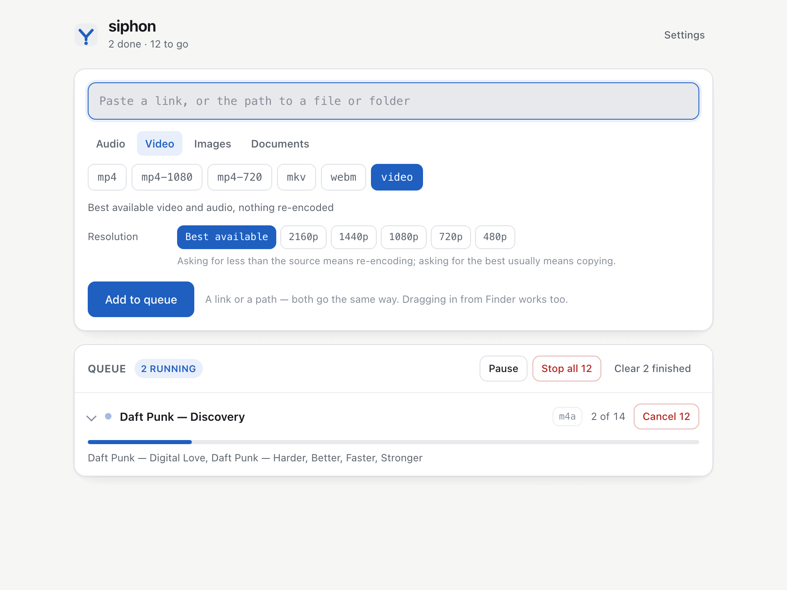
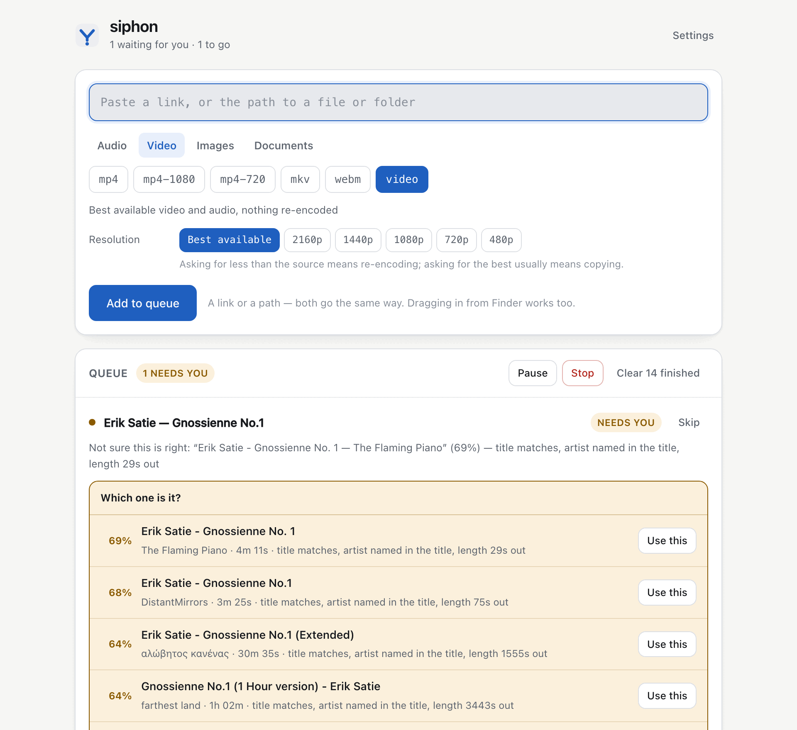

Paste a link and get the file. Point it at a folder you already have and get the same thing in a different shape. It is one pipeline either way — a download is just a conversion that had to fetch its input first — and it does not re-encode anything it does not have to.

The problem
The public cobalt instance can no longer fetch from YouTube. Not because of anything wrong with cobalt — because YouTube blocks the addresses a popular shared service runs from. A copy running on your own connection, making a handful of requests, does not have that problem.
siphon is that, and the other half nobody ships with it. A downloader that hands you a .webm when you wanted an mp3, and leaves you to find something else to convert it, has done half a job. Here a file already on your disk enters the same pipeline a URL does, simply skipping the stage that fetches bytes.
siphon get https://… best quality, nothing re-encoded siphon get https://… --as mp3 fetch and make an mp3 siphon get https://…/playlist --as m4a a playlist, tagged and foldered siphon convert album/ --as flac a folder already on this disk siphon convert photos/ --as web-image so is a folder of photographs siphon list https://…/playlist show what is in it, fetch nothing
Or run siphon on its own and it opens a window on 127.0.0.1 — the same queue, seen from the other side.
Getting it
siphon ships no binaries. That is deliberate: yt-dlp releases most weeks because the sites it reads keep changing, and a copy frozen inside a download would be broken by the time you opened it. This way brew upgrade yt-dlp fixes siphon without siphon being touched.
So the first run asks, and the default answer is yes to all of it.
siphon needs a few programs it does not ship. ffmpeg needed — converting audio and video, and muxing what yt-dlp fetches magick extra — still image formats ffmpeg handles badly or not at all brew install ffmpeg brew install imagemagick Install all 2 of these with Homebrew? [Y/n]
On a system whose package manager needs root, siphon prints the command instead of running it. It will not invoke sudo on your behalf.
The source is on GitHub, MIT, Python 3.10 or newer. Clone it and run ./start.sh, or build a .app and a single-file .pyz with ./build.sh.
In depth
Asking for an mp4 is usually not a conversion. The video is already H.264 and the audio already AAC; both are legal inside an mp4; the only work needed is moving the streams into a different wrapper. That takes about a second and changes not one sample. Re-encoding anyway would cost minutes and quality in exchange for nothing at all.
So siphon compares what is in the file against what you asked for, stream by stream, re-encodes exactly the streams that need it — and tells you which ones those were.
$ siphon get 'https://www.youtube.com/watch?v=aqz-KE-bpKQ' --as mp4-720 -v
✓ Big Buck Bunny 60fps 4K.mp4 (153.7 MB)
fetched aqz-KE-bpKQ.mp4
Repackaged from mp4 to mp4 with the streams copied — nothing re-encoded.
audio copied: already aac
video copied: already h264
Sixteen seconds for 153 MB, and the packets in the output are byte-for-byte the packets that came down the wire. There is a test that proves it — by comparing per-stream packet checksums, because decoded audio is not proof: containers disagree about padding and interleaving, so a perfect copy can decode a few hundred samples adrift.
The same reasoning runs backwards into the fetch. Ask for an mp4 and siphon asks yt-dlp for the H.264 and AAC renditions specifically, so the conversion afterwards finds it has nothing to do. Ask for an .opus from YouTube and the result is a pure copy of what YouTube already serves — 0.09 seconds, against 7.65 to re-encode the same audio to mp3.
You can see the decision before committing to it: siphon plan recording.wav --as flac.
Paste a Deezer, Spotify or Tidal album, playlist or track. siphon reads the track list — titles, artists, running times, cover art, ISRCs — then finds each track something that will actually serve it, fetches that, tags it, embeds the cover and files it under the album.
Deezer needs no key at all. Spotify works without one too, by reading the same embed its web player uses — but that path cannot see ISRCs and stops at fifty tracks of a long playlist, so siphon says when a list looks truncated rather than quietly handing you a fraction of it.
This is where a music downloader usually goes quietly wrong. The obvious approach is to search the title and take whatever is closest in length. That is wrong often enough to matter:
wanted: Daft Punk — Harder, Better, Faster, Stronger (226s) 100% 225s Daft Punk Daft Punk - Harder, Better, Faster, Stronger title matches, channel is the artist, length exact 73% 225s Fr. Eckle Studios Daft Hands - Harder, Better, Faster, Stronger title matches, length exact 49% 207s Daft Punk Daft Punk - Around the World / Harder Better… length 19s out, looks like a live version
“Daft Hands” is a different recording that happens to be closer in length than the real track. A resolver that decides on running time picks it. So running time is worth a quarter of the score and never more; the rest is the title, and whether the artist is the one who uploaded it.
Above 75% siphon acts without comment. Below 50% it downloads nothing and names the closest miss. In between it stops and asks — before fetching, with the candidates and the reasons laid out, in the terminal or as a card in the window. A weak match is shown before it downloads, not apologised for after.

mp3 · m4a · opus · flac · wav
Plus audio, meaning whatever it already was, untouched.
mp4 · mp4-1080 · mp4-720 · mkv · webm
Plus video — best available, nothing re-encoded.
jpg · png · webp · tiff · gif
web-image caps the longest side at 2000px. Transparency is flattened onto white, not the black you would otherwise get.
pdf · docx · xlsx · pptx · epub · odt · rtf · html · md · txt · csv
Office files to PDF keep their layout; documents to markup keep their meaning. Different engines, on purpose.
A preset is where a setting starts, not where it is stuck. Pick a format and the window offers what can be adjusted on it — a bitrate for a lossy audio format, a resolution for video, quality and a size cap for images, a rendering resolution for PDF pages — and the command line takes the same choices. Only the settings that mean something are offered: there is no bitrate on FLAC and no resolution on an audio file, because a control that changes nothing is worse than no control.
A PDF rendered to images gives you one file per page, not a picture of page one.
siphon fetches things that are served openly. It reads playlists from streaming services as metadata — what the tracks are — and then fetches those tracks from somewhere that serves them. It does not decrypt protected streams, and it will not be made to. If a service hands out its audio under DRM, siphon's answer is that it cannot help, and it says so in those words rather than failing strangely.
It is not an editor and not a library manager. It does not upload anything anywhere, and nothing leaves your machine except the request that fetches the media. There are no accounts, no telemetry and no cloud anything.
Two limits worth knowing before you meet them. There is no way back out of a PDF — a PDF describes marks on a page, and the structure the document had before it became one is not in the file; siphon makes PDFs smaller and renders their pages, and does not pretend to un-print them. And converting a document is not transcoding: tracked changes and exact layout do not survive a change of format, so every plan says what it will lose before it runs.
The wider workshop
Move between guided-meditation authoring, measured speech, live interpreting, a voice companion, lyric video, delivery validation, keeping a Downloads folder empty, and the small field tools that support all of them, on one voice, one speech engine and one hearing layer they share.
Assemble guided sessions and keep published maps beside what was actually found.
Explore Gateway Forge →A transparent Piper workbench for timing, pronunciation, and honest audio export.
Explore Voice Forge →Karaoke and narration video with a vector visor face that mouths every word.
Explore Protoke →Check a finished file against where it is going, and correct it without touching the original.
Explore Media Preflight →Fetch from a link or convert what you already have, without re-encoding what it does not have to.
Explore siphon →Empty the Downloads funnel into structure the folder taught it, and undo any of it.
Explore auto-sort →Hear the table in English a few seconds behind, cut at the end of each thought, on your own phone.
Explore Interpreter →A local voice companion for Mac, iPhone and iPad, with a protogen LED-visor face.
Explore companion-forge →Small utilities for audio inspection, corpus work, authoring, and repeatable checks.
Open the toolbox →Teaching one small voice to speak eight languages, and releasing it for every app that speaks.
Open the repository →The speech engine the apps share: espeak-ng, the phonemizer and Piper inference, from one source.
Open the repository →The hearing layer Interpreter and companion-forge share: ObjCExceptions, SileroVAD, SampleBuffer and ModelStore, from one source.
Open the repository →The builder and project network every page here shares, kept in one place.
Open the repository →Get in touch
There is no analytics here and no crash reporter, so a failure has no way of reaching me on its own.
Its tests pass on Linux, but nobody has used it there by hand yet. It has not been run on Windows yet. If you use it on one of them, say what happened, working or not.